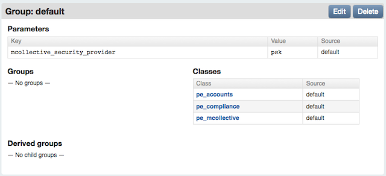

Working with Complex Settings
Many behaviors of Puppet Enterprise can be configured after installation.
Increasing the MySQL Buffer Pool Size
The default MySQL configuration uses an unreasonably small innodb_buffer_pool_size setting, which can interfere with the console’s ability to function.
If you are installing a new PE 2.7 console server and allowing the installer to configure your databases, it will set the better value for the buffer pool size. However, PE cannot automatically manage this setting for upgraded console servers and manually configured databases.
To change this setting, edit the MySQL config file on your database server (usually located at /etc/my.cnf, but your system may differ) and set the value of innodb_buffer_pool_size to at least 80M and possibly as high as 256M. (Its default value is 8M, or 8388608 bytes.)
The example diff below illustrates the change to a default MySQL config file:
[mysqld]
datadir=/var/lib/mysql
socket=/var/lib/mysql/mysql.sock
user=mysql
# Default to using old password format for compatibility with mysql 3.x
# clients (those using the mysqlclient10 compatibility package).
old_passwords=1
+innodb_buffer_pool_size = 80M
# Disabling symbolic-links is recommended to prevent assorted security risks;
# to do so, uncomment this line:
# symbolic-links=0
[mysqld_safe]
log-error=/var/log/mysqld.log
pid-file=/var/run/mysqld/mysqld.pid
After changing the setting, restart the MySQL server:
$ sudo /etc/init.d/mysqld restart
Changing the Console’s Port
By default, a new installation of PE will serve the console on port 443. However, previous versions of PE served the console’s predecessor on port 3000. If you upgraded and want to change to the more convenient new default, or if you need port 443 for something else and want to shift the console somewhere else, perform the following steps:
-
Stop the
pe-httpdservice:$ sudo /etc/init.d/pe-httpd stop - Edit
/etc/puppetlabs/httpd/conf.d/puppetdashboard.confon the console server, and change the port number in theListen 443and<VirtualHost *:443>directives. (These directives will contain the current port, which is not necessarily 443.) - Edit
/etc/puppetlabs/puppet/puppet.confon the puppet master server, and change thereporturlsetting to use your preferred port. - Edit
/etc/puppetlabs/puppet-dashboard/external_nodeon the puppet master server, and change theENC_BASE_URLto use your preferred port. - Make sure to allow access to the new port in your system’s firewall rules.
-
Start the
pe-httpdservice:$ sudo /etc/init.d/pe-httpd start
Recovering from a Lost Console Admin Password
If you have forgotten the password of the console’s initial admin user, you can create a new admin user and use it to reset the original admin user’s password.
On the console server, run the following commands:
$ cd /opt/puppet/share/console-auth
$ sudo /opt/puppet/bin/rake db:create_user USERNAME="adminuser@example.com" PASSWORD="<password>" ROLE="Admin"
You can now log in to the console as the user you just created, and use the normal admin tools to reset other users’ passwords.
Note: in PE 2.5.1 and 2.5.0, use the following command instead:
$ sudo /opt/puppet/bin/rake -f /opt/puppet/share/console-auth/Rakefile db:create_initial_admin email=user@example.com password=<PASSWORD>
Changing the Console’s Database User/Password
The console uses a database user account to access its MySQL database. If this user’s password is compromised, or if it just needs to be changed periodically for policy reasons, do the following:
-
Stop the
pe-httpdservice on the console server:$ sudo /etc/init.d/pe-httpd stop -
Use the MySQL administration tool of your choice to change the user’s password. With the standard
mysqlclient, you can do this with:SET PASSWORD FOR 'console'@'localhost' = PASSWORD('<new password>'); - Edit
/etc/puppetlabs/puppet-dashboard/database.ymlon the console server and change thepassword:line under “common” (or under “production,” depending on your configuration) to contain the new password. - Edit
/etc/puppetlabs/puppet/puppet.confon the console server and change thedbpassword =line (under[master]) to contain the new password. -
Start the
pe-httpdservice back up:$ sudo /etc/init.d/pe-httpd start
Configuring Console Authentication
Configuring the SMTP Server
The console’s account system sends verification emails to new users, and requires an SMTP server to do so. If your site’s SMTP server requires a user and password, TLS, or a non-default port, you can configure these by editing the /etc/puppetlabs/console-auth/config.yml file:
smtp:
address: mail.example.com
port: 25
use_tls: false
## Uncomment to enable SMTP authentication
#username: smtp_username
#password: smtp_password
Allowing Anonymous Console Access
To allow anonymous, read-only access to the console, do the following:
- Edit the
/etc/puppetlabs/console-auth/cas_client_config.ymlfile and change theglobal_unauthenticated_accesssetting totrue. - Restart Apache by running
sudo /etc/init.d/pe-httpd restart.
Disabling and Reenabling Console Auth
If necessary, you can completely disable the console’s access controls. Run the following command to disable console auth:
$ sudo /opt/puppet/bin/rake -f /opt/puppet/share/console-auth/Rakefile console:auth:disable
To re-enable console auth, run the following:
$ sudo /opt/puppet/bin/rake -f /opt/puppet/share/console-auth/Rakefile console:auth:enable
Using LDAP or Active Directory Instead of Console Auth
For instructions on using third-party authentication services, see the console_auth configuration page.
Changing Orchestration Security
PE’s orchestration messages are encrypted and authenticated. You can easily change the authentication method or the password used in the PSK authentication method.
Changing the Authentication Method
By default, orchestration messages are encrypted with SSL and authenticated with a pre-shared key (PSK). This balance of security and performance should work for most users, but if you need higher security and don’t have a large number of nodes, you can reconfigure PE to authenticate orchestration messages with an AES key pair.
You can change the authentication method via the console. Navigate to your default group, then create a new parameter called mcollective_security_provider. The value of this parameter can be:
psk— Use the default PSK authentication.aespe_security— Use AES authentication for extra security.

After changing the authentication method, you cannot issue orchestration messages to a given node until it has run Puppet at least once. This means changing the authentication method requires a 30 minute maintenance window during which orchestration will not be used. You can check whether a given node has changed its orchestration settings by checking its recent reports in the console and ensuring that its /etc/puppetlabs/mcollective/server.cfg file was modified.
Before changing the authentication method, you should carefully consider the pros and cons of each:
PSK
The PSK authentication method is enabled by default. Under this method, nodes receive a secret key via Puppet and trust messages sent by clients who have the same key.
Pro:
- Scales to many hundreds of nodes on average puppet master hardware.
Con:
- Private key is known to all nodes — an attacker with elevated privileges on one node could obtain the pre-shared key and issue valid orchestration commands to other nodes.
- No protection from replay attacks — an attacker could repeatedly re-send commands without knowing their content.
AES (aespe_security)
The AES authentication method must be manually enabled in the console. Under this method, nodes receive one or more public keys, and trust messages sent by clients who have one of the matching private keys.
Pro:
- Private key is only known to the puppet master node — an attacker with elevated privileges on an agent node cannot command other nodes.
- Protection from replay attacks — once a short time window has passed, messages cannot be re-sent, and must be reconstructed and encrypted with a private key.
Con:
- All nodes must have very accurate timekeeping, and their clocks must be in sync. (The allowable time variance defaults to a 60-second window.)
- The puppet master node requires more powerful hardware. This authentication method may not reliably scale to multiple hundreds of nodes.
Changing the Pre-Shared Key
When using PSK authentication, orchestration messages are authenticated with a randomly generated password. (This password is distributed to your nodes by Puppet, and isn’t meant to be entered by users.)
If this password is compromised, or if it just needs to be changed periodically for policy reasons, you can do so by editing /etc/puppetlabs/mcollective/credentials on the puppet master server and then waiting for puppet agent to run on every node.
After changing the password, you cannot issue orchestration messages to a given node until it has run Puppet at least once. This means changing the orchestration password requires a 30 minute maintenance window during which orchestration will not be used. You can check whether a given node has changed its orchestration settings by checking its recent reports in the console and ensuring that its /etc/puppetlabs/mcollective/server.cfg file was modified.
Fine-tuning the delayed_job Queue
The console uses a delayed_job queue to asynchronously process resource-intensive tasks such as report generation. Although the console won’t lose any data sent by puppet masters if these jobs don’t run, you’ll need to be running at least one delayed job worker (and preferably one per CPU core) to get the full benefit of the console’s UI.
Currently, to manage the delayed_job workers, you must either use the provided monitor script or start non-daemonized workers individually with the provided rake task.
Using the monitor script
The console ships with a worker process manager, which can be found at script/delayed_job. This tool’s interface resembles an init script, but it can launch any number of worker processes as well as a monitor process to babysit these workers; run it with --help for more details. delayed_job requires that you specify RAILS_ENV as an environment variable. To start four worker processes and the monitor process:
# env RAILS_ENV=production script/delayed_job -p dashboard -n 4 -m start
In most configurations, you should run exactly as many workers as the machine has CPU cores.
Tuning the ActiveMQ Heap Size
The puppet master node runs an ActiveMQ server to support orchestration commands. By default, the ActiveMQ process uses a Java heap size of 512 MB, which has been tested to support thousands of nodes.
You can increase or reduce the amount of memory used by ActiveMQ by navigating to the puppet master node’s page in the console and creating a new parameter called activemq_heap_mb. The value you assign to it will be the amount of memory, in megabytes, used by ActiveMQ; delete the parameter to revert to the default setting.
This is most commonly used to create stable proof-of-concept deployments on virtual machines with limited amounts of RAM. Many of the puppet master’s features can fail if ActiveMQ consumes all of the available memory on the system, and reducing its heap size by half or more can prevent these problems on a starved VM.
Setting ActiveMQ Thread Pooling
By default, ActiveMQ is set up to use a dedicated thread for every destination. In environments with large numbers of destinations, this can cause memory resource issues. If the ActiveMQ log is full of “java.lang.OutOfMemoryError: unable to create new native thread” errors, you can configure ActiveMQ to use a thread pool by setting the system property: -Dorg.apache.activemq.UseDedicatedTaskRunner=false. This is specified in the ActiveMQ start script via ACTIVEMQ_OPTS. Using a thread pool will reduce the number of threads required by ActiveMQ and so should reduce its memory consumption.